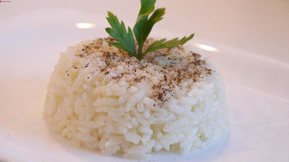

Turkish Style Rice

Do you know what's staple in Turkish cuisine? You got that right, rice!
Making some rice with this method is pretty easy and it tastes very good at the end!
Let's check our ingredients first:
- Rice
- Butter
- Chicken or vegetable stock cubes
- Black pepper
The steps are very practical as well.
- Grab a sieve and put the rice into the sieve. Then wash the rice under the running water for a few minutes.
- Meanwhile heat the pan and put some butter in there
- Don't forget to melt some stock inside hot water. The measurement is x1 glass of rice to x1,5 glasses of water
- Once the butter is nicely heated up, get the rice in there and start frying a bit with butter for 3 minutes
- When the time is over, add the water on top of it, cover it up. Keep it high temperature until it comes to boil. When it dones, low-mid heat is enough to cook some rice.
- If the rice is fully cooked, you can add the black pepper on top. It's ready to serve.
This kind of rice is delicious on its own also with other kinds of food together.
Enjoy!
Homepage